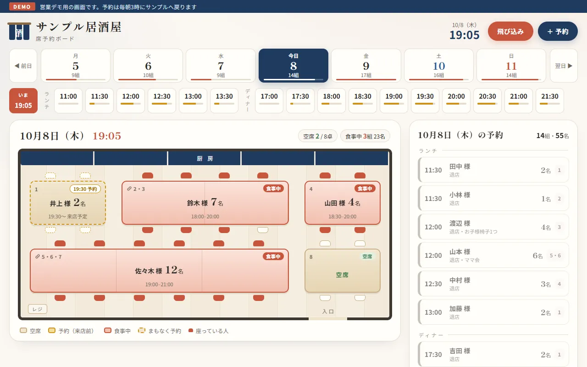
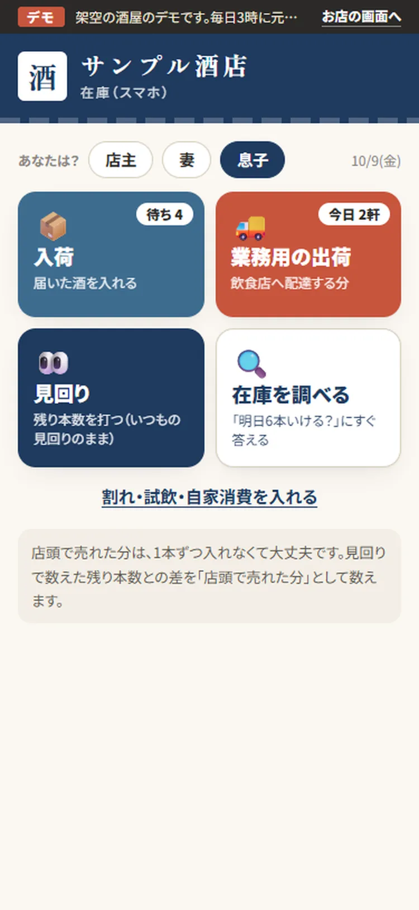
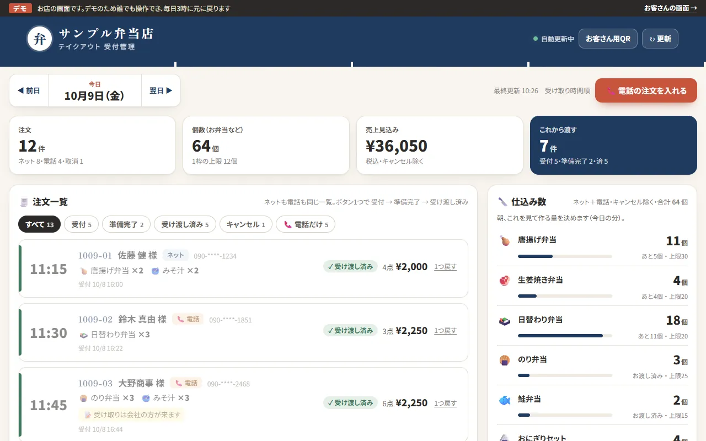
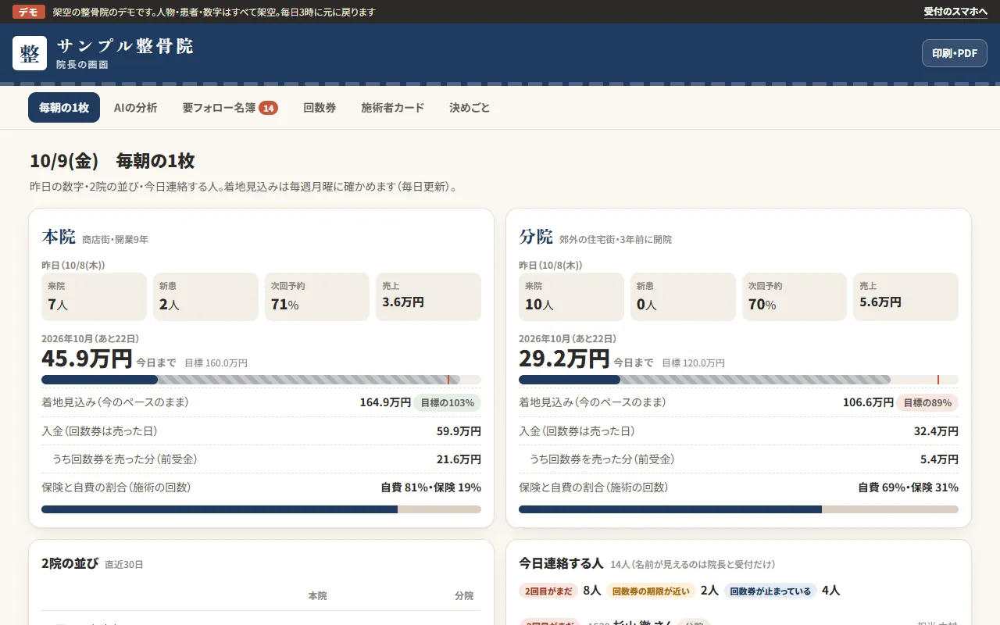
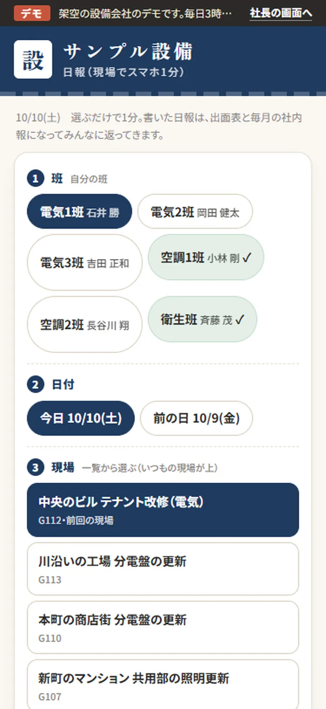
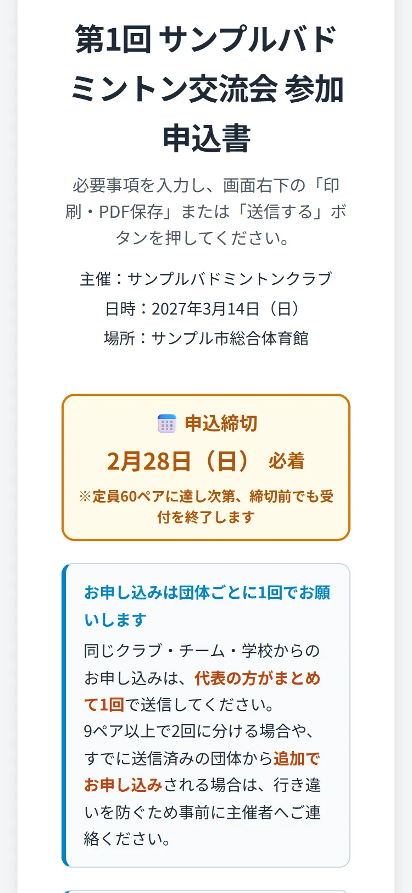

A業務効率化・自動化
毎日の手作業を、
しくみで減らす。
同じ内容の入力や、申込への返信に追われている方へ。入力・集計・連絡を自動で進めるしくみを作ります。AIを使わない方法も含めてご提案します。
- こんな作業に
- 転記・集計・決まった返信・予約の管理・期限のお知らせ
- 手元に残るもの
- 仕事で使うしくみと、担当者が迷わず使うための手順
個人事業主・中小企業の業務改善とAI研修
入力・集計・返信を自動にするしくみづくりと、社員がAIを仕事で使えるようになる研修。どちらか一方だけでも頼めます。
根津本人が、同じ画面を見ながら一緒に進めます。超伴走型／AIの知識や道具選びは不要／全国オンライン
相談したいと送るだけ。初回無料・売り込みなし


アプリ・自動化システムの開発
AI・Webライティング講座で受講生を指導
会場・オンラインでのセミナー登壇
01何を頼めるの？
「作業を楽にするしくみを作ってほしい」「社員にAIの使い方を教えてほしい」。どちらか一方だけでもご依頼いただけます。
A業務効率化・自動化
同じ内容の入力や、申込への返信に追われている方へ。入力・集計・連絡を自動で進めるしくみを作ります。AIを使わない方法も含めてご提案します。
BAI研修・人材育成
AIを初めて使う社員や、使い方に迷う方へ。メールや資料の下書きなど、実際の仕事を題材に練習します。社内でAIを広める担当者の育成もできます。
A業務効率化・自動化
申込が届いたら、受付の返信を送り、一覧表に追加して、合計を出す。毎回人が行っている一連の作業を、まとめて進められる形にします。



A作ったしくみ
業種ごとの困りごとに合わせて作ったデモです。画面はすべて、架空のお店・架空の名前で動かしています。画面を押すと、大きく見られます。
飲食店（2）／整備・タイヤ店／美容室／酒屋／整骨院／設備工事会社／ホームページ
横にスワイプ（1 / 8）・画面を押すと大きく見られます
予約の電話で空いている卓をすぐ答えられず、宴会のたびに配置を紙に描き直している。
店内の見取り図で、日付・時間ごとの空きが一目で分かる。5名以上は隣の卓を自動でつなぐ。
昼前の電話注文で調理の手が止まり、聞き間違いや書き漏れも起きる。
お客さまはスマホで予約、お店は一覧で確認。電話の注文も同じ一覧・同じ上限で受けられる。
外出先で予約を頼まれても空きが分からない。今日の段取りが社長の頭の中にしかない。
Googleカレンダーの予約が、台帳とピットごとのボードに自動でまとまる。
希望をLINEからさかのぼって拾い、重なった日の調整に毎月時間がかかる。
スタッフはスマホで希望を出すだけ。案は自動で作り、ぶつかった日はルールで決めて理由も出す。
「明日6本いける？」に、冷蔵庫を見に行かないと答えられない。売れ筋を切らしてしまう。
入荷・出荷・見回りの3つを入れるだけ。売れるペースから「今日頼むもの」を問屋ごとに理由つきで出す。
月末の集計まで分院の数字が分からない。新しい患者さんが続かない理由も見えない。
受付が来院を1行入れると、毎朝の1枚と要フォロー名簿が出る。AIは計算済みの数字だけで分析し、文中の数字も照らし合わせる。
手書きの日報の集計に時間がかかり、現場の声が社長まで届かない。
班長はスマホで1分の日報。出面表は自動で、社内報は候補から「作る」を押すとA4のスライドとPDFに。
ホームページを作りたいが、何をどの順で書き、どう見せればいいか分からない。
参考サイト・会社情報・目的を入れると、構成・デザイン・画像・採点・手直しまで自動で回して1ページを作る。
ほかにも、Web制作・現場支援・アプリなどを作っています。
制作実績をもっと見るBAI研修・人材育成
AIは、文章の下書きや情報の整理を手伝う道具です。開くところから、自分の仕事で試すところまで、参加者の経験に合わせて一緒に練習します。
研修で練習する「頼み方」の例
よくある頼み方メールを書いて
研修のあとこのメモをもとに、取引先へ納期を1週間延ばしてもらうお願いのメールにして。丁寧だけど長すぎない文で、件名もつけて。
出てきた答えをそのまま使わず、確認して自分の言葉に直すところまで練習します。単発の研修だけでもご依頼いただけます。
AI・Webライティング講座で受講生を指導してきた経験をもとに、研修を組み立てます。
はじめての方・社員向け
会議メモの整理、資料の下書き、メール文づくりなどを、実際に手を動かして練習します。事前に仕事内容をお聞きして、研修で扱う題材を決めます。
手元に残るもの：仕事で使い回せる頼み方の例と、自分でAIを使ってみた経験
社内で教える人も育てたい方へ
社内でAI活用を進める担当者を個別に支援します。日々の使い方に加え、仕事を楽にするしくみの作り方や、ほかの社員への伝え方も一緒に学びます。
手元に残るもの：AIの使い方を社内に広める担当者と、共有できる手順
人数や内容が決まっていなくても大丈夫です。参加者の経験と目標をお聞きして、内容・頻度・範囲をご提案します。
研修をLINEで無料相談A実際に使われているしくみ
画面は、実際のしくみの文面と形のまま、会社名・名前・日時を架空にして再現しています。
LINEに書くだけで、依頼が一覧表に残り、担当者へ通知。期限の2日前にも自動でお知らせします。担当者10名が日常利用しているしくみです。
LINEで登録担当者へ通知期限前に通知
カレンダーに面談の予定を入れると、予約の完了・3時間前・10分前・日時の変更など、6種類のお知らせをLINEで自動送信。毎回の連絡の手間がなくなりました。
カレンダーに登録LINEで自動送信

ネットで申込が届くと、確認メールの返信、団体ごとの申込書、参加者名簿、参加費の集計まで自動で進みます。バドミントンの交流会で実際に使っています。
Webで受付自動で返信名簿・金額集計
手書き・PDFの見積の内容を読み取り、登録済みの価格表と突き合わせて、Excelの見積書を自動で作成。書き写す作業と、過去の価格を探す手間を減らしました。
これまで作ったしくみをもとに計算した目安で、実測値や効果の保証ではありません。作業の量や、人が確認する内容によって変わります。最初の設定や、使い方に慣れる時間も必要です。
| 業務 | 従来の作業 | 自動化後の目安 | 自動化する範囲 |
|---|---|---|---|
| 議事録作成 | 2時間 / 回 | 15分 / 回 | 音声を文章にし、AIで要点を整理。人が確認・修正 |
| 記事・ブログ制作 | 8時間 | 2.5時間 | 記事の構成・画像づくり・掲載作業の一部を自動化 |
| 提案・社内資料 | 6時間 | 1.5時間 | 資料の下書きとスライドの作成・見た目の調整 |
| 見積書・決まった書式の書類 | 30分 / 件 | 3分 / 件 | 内容の読み取り・価格の確認・書類の作成 |
| 申込・問い合わせ | 15分 / 件 | 決まった返信や集計の手間を削減 | 受付・返信・一覧表の集計。個別の対応は別途 |
| 進捗管理・催促 | 週5時間 | 週1時間 | 進み具合と期限のお知らせ |
「これに似た作業を、毎日している」そのままお聞かせください。今の環境で使える方法をご提案します。
業務効率化をLINEで無料相談A＋B2つの支援に共通すること
操作が分からない、業務に合わない、続かない。そうならないように、作る・教えるだけでなく、使えるところまでを支援の中に入れています。
作るときも教えるときも、オンラインでお互いの画面を見ながら、「どこを押すか」「何を入力するか」から確認します。
お渡しするときに動きを一緒に確かめ、担当者が迷わず使うための手順を残します。
継続してご依頼いただく場合は、定期的にお話を聞き、使ってみて困った点を一緒に直します。
Profile相談をお受けする人

業務改善・AI研修の相談役
経理の現場も、発信の現場も。業務を知る目線で、AI活用を考えます。
元会計事務所勤務・法人の経理担当。現在はAIスクールで使い方を教えながら、企業の記事づくりやインターネットでの集客も支援しています。経理や日々の事務作業を経験してきた立場から、仕事に合うAIの使い方を一緒に考えます。
Flowご相談からの流れ
必要な機能や、使うAIを決めていなくても大丈夫です。仕事内容をお聞きし、進め方と費用をご提案します。
友だち追加して、ひとこと送ってください。何ができるか知りたい段階でもどうぞ。
相談したい業務効率化なら作業の流れを、研修なら参加者の経験や学びたい内容を確認します。
取り組む範囲と優先順位をご提案。1つの作業の自動化や、単発の研修から始めることもできます。
実際の仕事で試しながら、操作のしかたや分からない点を確認します。
FAQよくあるご質問
気になることは、相談の中でも直接お聞きください。
いいえ。無理な売り込みはしません。「自社の場合に何ができるか知りたい」だけのご相談も歓迎です。お話を聞いたうえで、依頼するかどうかをご判断ください。
初回相談は無料です。作るしくみの内容や、研修の人数・内容などをお聞きしたうえで、費用をご提案します。1つの作業の改善や、1回の研修からのご依頼も可能です。
大丈夫です。使うAIや、楽にしたい作業が決まっていなくても構いません。「この入力に時間がかかる」「AIを試してみたい」といったお話から、何ができるか一緒に整理します。
個人事業主から中小企業までご相談いただけます。これまで建設・スポーツ運営・スクール・サービス業などに関わるしくみを制作してきました。対応できる内容は、現状をお聞きして整理します。
デモは、業種ごとの困りごとに合わせて作った見本です。実際にお使いいただく場合は、お店や会社の仕事の流れをお聞きし、それに合わせて作ります。
入力してよい情報は、会社のルールや使うサービスによって異なります。お客様の情報や社外に出せない資料を、そのまま入れる前にご相談ください。扱う情報を確認し、入力する範囲や使い方を一緒に決めます。社内のパソコン上で動く専用AIを作った経験もあります。
可能です。業務効率化・自動化とAI研修・人材育成は、それぞれ独立してご依頼いただけます。単発の研修だけのご依頼も歓迎です。その後の継続契約を無理にお勧めすることはありません。
参加する方の経験を事前にお聞きし、進め方を調整します。画面を見ながら一緒に操作し、メール文を作るなど、身近な作業から練習します。継続支援では、研修後に使ってみて困った点も確認します。
全国オンラインで対応しています。パソコンでお話ししながら、お互いの画面を見て進めます。対面をご希望の場合はご相談ください。
Contact何から始めるか、一緒に考えます
「毎日の手作業を減らしたい」「社員がAIを使えるようになってほしい」。その段階から、根津本人がお聞きします。